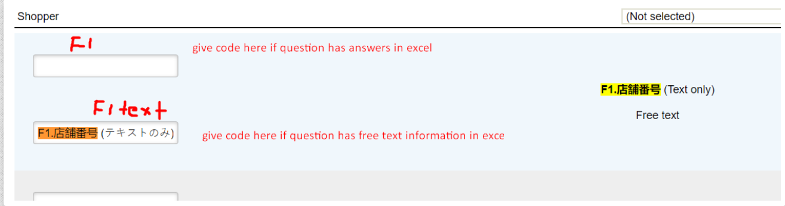
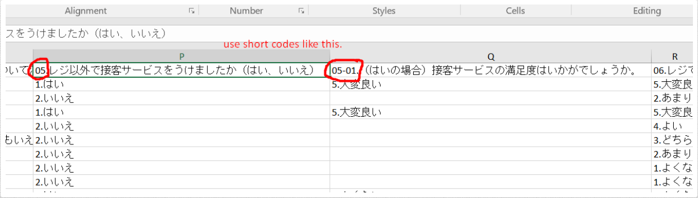

Import Review Data
1. Fill the object code here in questionnaire:
2. Apply the import profile structure like this that should match with Excel columns:
3. Use short codes in Excel as well that match with your import profile:
Import Reviews with Sample
Maybe some of you are already aware of this functionality, but this is what I investigated today. Last time, we couldn't figure out how to import historical data and link all imported reviews with relevant sample records.
I would like to share with you the feasibility to import reviews with sample details. In this way, imported reviews will be linked with sample records. The steps are:
- Import an empty sample just to create a column structure.
- Create a survey and link it with the sample.
- Create an import profile, edit profile data, and then link it with the survey at the bottom.
- After editing profile data, open it again, and you will see the sample columns at the bottom of the page.
- Define the sample column names as we do for questions.
- Use the same Excel file for reviews and sample records.
See attached Excel file that contains reviews and sample details.
See imported reviews that are linked with samples.
Import Profile
Check the import profile: View Import Profile